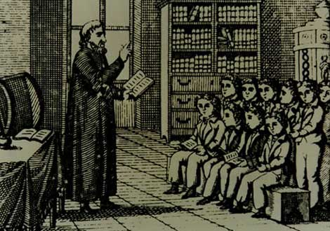

Εκπαίδευση
 Στα Σάλωνα, όπως και στην ευρύτερη περιοχή (Ναύπακτος, Δελφοί, Δεσφίνα, Γαλαξίδι, Λιδωρίκι), λειτουργούσαν σχολεία πριν ακόμη ξεκινήσει η πνευματική κίνηση του Νεοελληνικού Διαφωτισμού, τα οποία ιδρύθηκαν ή συντηρήθηκαν από την Εκκλησία. Εκεί φοίτησαν λόγιοι και πνευματικοί άνθρωποι του τόπου και δίδαξαν κυρίως κληρικοί. Ανάμεσά τους ξεχώρισαν τα σχολεία που ίδρυσε στα Σάλωνα και στην Αγία Ευθυμία ο Επίσκοπος Σαλώνων Νικόδημος Καβάσιλας, (1642 περίπου) καθώς και το σχολείο που ιδρύθηκε το 1730 στα Σάλωνα, στο οποίο δίδαξε ένας από τους Δασκάλους του Γένους ο Πέτρος Βαρίδης. | |||